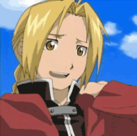
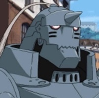
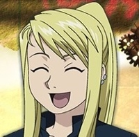

Edward was born in a small town named Resembool in the nation of Amestris, living with his younger brother Alphonse and their parents Trisha Elric and Van Hohenheim. After Hohenheim left the family on a journey early in their lives, Edward developed a loathing for their father as he and Alphonse learned to use alchemy before Trisha died of an illness years later. Thee two young boys concentrated on studying alchemy in the hopes of bringing their mother back to life, and trained with a skilled alchemist named Izumi Curtis.When they make the attempt to revive their mother, it failed and the brothers paid a bigger price via the Law of Equivalent Exchange: which states that every outcome requires an equal payment.
Alphonse loses his entire body while he and Edward are trying to revive his mother Trisha using alchemy. Edward sacrifices his right arm to seal Alphonse's soul into a suit of armor. Edward later becomes an alchemist from the state military of Amestris, and starts traveling with Alphonse to search for a method to recover Alphonse's body. They seek the Philosopher's Stone, which would allow them to restore their physical forms. Besides being a powerful alchemist, Alphonse is a skilled hand-to-hand fighter; having been trained by Izumi Curtis. While Alphonse cannot feel anything because he has no body, he is nearly invincible as long as the blood mark made by Edward on his armor to contain his soul is not defaced.
Winry has known Edward and Alphonse since childhood. She was orphaned at a young age when her parents were killed while serving as doctors in the Ishvalan war. She lived with her grandmother in Resembool from then on. Known as an "Automail Otaku", she is fascinated by any and all types of machines, tools, and excels in building and repairing automail. Along with her grandmother, Pinako, also a famous automail engineer, the two run a small shop out of their home. Winry is known to be an aoutomail prodigy. They made and installed Edward's automail arm and leg after he lost his original limbs in a failed human transmutation of his mother. Winry takes it upon herself to make sure that his automail is in top form, and travels to service it when as needed.[This dedication is either out of enthusiasm (due to these moments making up most of the moments she gets to be with Edward and Alphonse, as well as getting paid for each) or out of frustration (due to Edward constantly breaking his automail, which she is worried as to how Edward breaks the arm and what dangerous situations he is put in).
